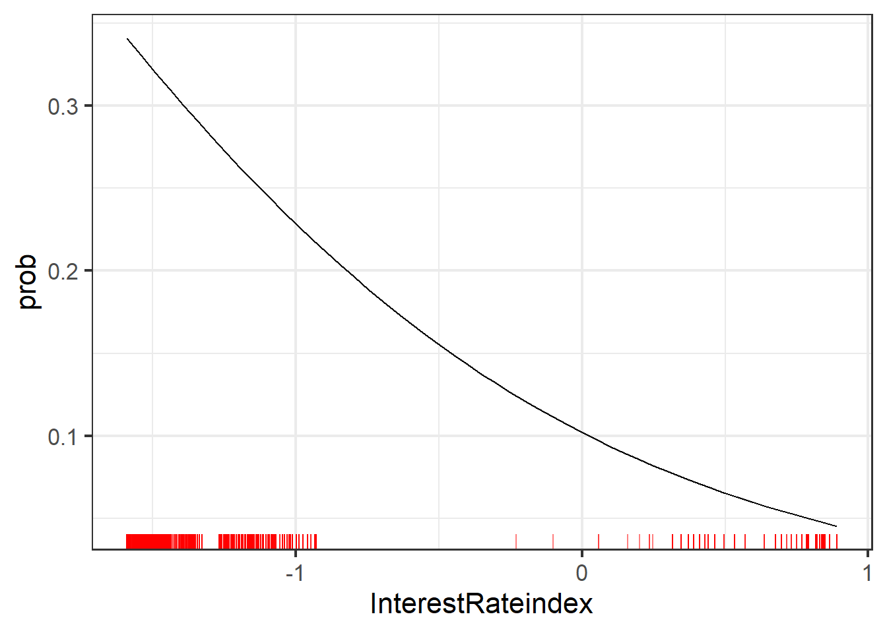
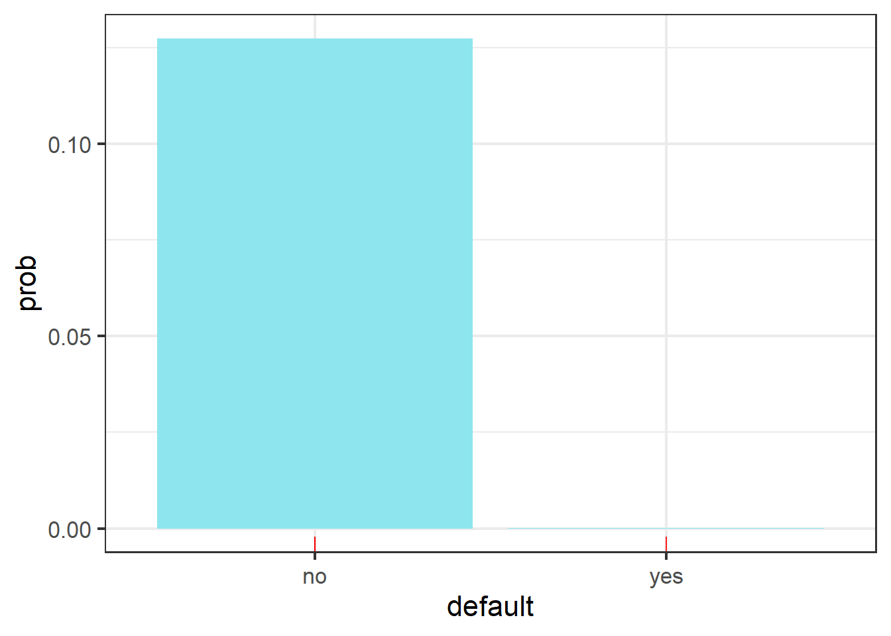

Chapter 3 [Logistic Regression]
In this section, we will create a logistic regression model and try to interpret the most important variables and their influence on the target variables. The detailed information of the model is indicated as below. Through the p-values of each variables listed in the right most column, we can observe that whether the contact is via telephone, campaign, pdays, priceIndex, confidenceIndex, and interestRateIndex shows statistical significance with small p-value. It indicates that these variables are more influential toward the target variable with non-zero coefficient.
##
## Call:
## glm(formula = y ~ ., family = binomial(link = "logit"), data = train_dat)
##
## Deviance Residuals:
## Min 1Q Median 3Q Max
## -1.9410 -0.4355 -0.3347 -0.2798 2.9246
##
## Coefficients: (4 not defined because of singularities)
## Estimate Std. Error z value Pr(>|z|)
## (Intercept) -1.61814 0.26531 -6.099 1.07e-09 ***
## defaultyes -8.72290 112.70512 -0.077 0.93831
## housingyes -0.04913 0.04348 -1.130 0.25840
## loanyes -0.03580 0.06026 -0.594 0.55245
## contacttelephone -0.70713 0.06474 -10.923 < 2e-16 ***
## maritaldivorced -0.09438 0.08297 -1.138 0.25531
## maritalmarried -0.01726 0.05365 -0.322 0.74763
## maritalsingle NA NA NA NA
## educationbasic.4y -0.21236 0.10285 -2.065 0.03895 *
## educationbasic.6y -0.09675 0.12572 -0.770 0.44154
## educationbasic.9y -0.16431 0.08606 -1.909 0.05622 .
## educationhigh.school -0.10103 0.06083 -1.661 0.09676 .
## educationilliterate 1.74264 0.83871 2.078 0.03773 *
## educationprofessional.course -0.10639 0.07746 -1.373 0.16961
## educationuniversity.degree NA NA NA NA
## jobadmin. 0.02766 0.13636 0.203 0.83928
## jobblue.collar -0.21987 0.14581 -1.508 0.13157
## jobentrepreneur -0.15666 0.18208 -0.860 0.38957
## jobhousemaid -0.05683 0.20174 -0.282 0.77817
## jobmanagement -0.03145 0.15404 -0.204 0.83822
## jobretired 0.37931 0.16737 2.266 0.02343 *
## jobself.employed -0.03745 0.17258 -0.217 0.82822
## jobservices -0.19673 0.15315 -1.285 0.19895
## jobstudent 0.43575 0.17404 2.504 0.01229 *
## jobtechnician -0.03683 0.14234 -0.259 0.79582
## jobunemployed NA NA NA NA
## poutcomefailure -0.76899 0.23631 -3.254 0.00114 **
## poutcomenonexistent -0.23927 0.23582 -1.015 0.31029
## poutcomesuccess NA NA NA NA
## age 0.01568 0.02735 0.574 0.56628
## campaign -0.13304 0.03194 -4.166 3.11e-05 ***
## pdays -0.24163 0.04857 -4.975 6.51e-07 ***
## previous -0.04153 0.03458 -1.201 0.22979
## priceIndex 0.38584 0.02747 14.044 < 2e-16 ***
## confidenceIndex 0.26208 0.01984 13.207 < 2e-16 ***
## InterestRateindex -1.01481 0.02926 -34.681 < 2e-16 ***
## ---
## Signif. codes: 0 '***' 0.001 '**' 0.01 '*' 0.05 '.' 0.1 ' ' 1
##
## (Dispersion parameter for binomial family taken to be 1)
##
## Null deviance: 18612 on 24389 degrees of freedom
## Residual deviance: 14904 on 24358 degrees of freedom
## AIC: 14968
##
## Number of Fisher Scoring iterations: 10After the logistic regression models are built, we may access the feature importance by shapley value plot. The plot above is showing the shapley value of each variable sorted by their absolute values of mean shapley values. The most influential 5 variables are interest rate index, price index, default, number of days since last contact, and whether the previous campaign fails. We will create PDP plot of these 5 variables to inspect if they actually create meaningful impact on prediction.
To begin with, we create a partial dependence plot(named as PDP plot in following sections) showing the relationship between scaled interest rate index and the target variable. For all the PDP plots in this project, we set the y axis as the predicted probability of y=yes instead of log odd by parameter prob=TRUE to make the plot more interpretable. The line shows decreasing trend with positive concavity, Indicating that the predicted probability of the person having term deposit decreases with the increase in scaled interest rate index.This is consistent with what we found in EDA where the lower interest rate index corresponds to higher probability of y=yes.

The plot following shows the relationship between scaled price index and predicted probability of y=yes.The line shows increasing trend with positive concavity, Indicating that the predicted probability of the person having term deposit increases with the increase in scaled price index.This plot partially reflects what we found in EDA. It only shows that the probability of y=yes is higher when scaled price index value is large, but ignore the fact that the probability is also high when scaled price index value is smaller than -1.
The plot following is the PDP plot of whether the person has credit default against the target variable. We can observe that if the person has credit default, holding all other variable constant, the person will not have term deposit. This is consistent with what we found in EDA where the default yes corresponds to zero probability of y=yes.

The plot following shows the relationship between scaled number of days since last contacted and predicted probability of y=yes.The line shows decreasing trend, Indicating that the predicted probability of the person having term deposit decreases with the increase in scaled confidence index. This is consistent with what we found in EDA where the lower scaled pdays corresponds to higher probability of y=yes.
The plot following is the PDP plot of whether the person was contacted via telephone or cellular against the target variable. It is quite obvious that if the previous campaign fails, holding all other variable constant, the person is much less likely to have term deposit at the bank. This is consistent with what we found in EDA where the failed campaign index corresponds to lower probability of y=yes.
The following cell shows the test accuracy of logistic regression model. The model accuracy on test data is 0.8876681. the AUC roc value is 0.7789, combining with the roc curve bent toward upperleft corner. We conclude that this model performs well in terms of both accuracy, and sensitivity.
## [1] 0.8876681## Area under the curve: 0.7789At the end, we may conclude that interest rate index, price index, whether the person has credit default, days since last contact, and whether the last campaign fails are the most dominant variables determine the prediction of whether the person has term deposit with logistic regression model.